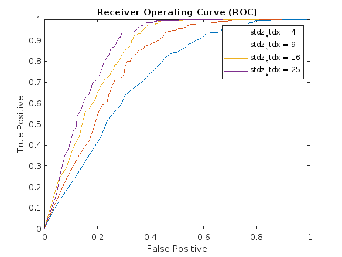
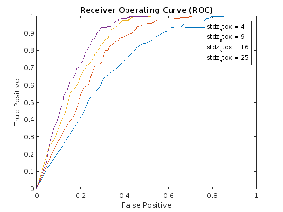

Stochastics Project 4
Contents
Nishat Ahmed, Armaan Kapoor, Nicolette Thiro
clc;
clear;
close all;
Part 1 Radar Detection
% a) Derive and implement in MATLAB the MAP rule for detecting the target. % Run 1000 iterations of your detector; compare the probability of error with the theoretical probability of error. N = 1000; % iterations %priori probabilities prob_target = 0.8; % probability target is there prob_not_target = 0.2; % probability target isn't there eta = prob_target/prob_not_target; % ratio of priori probabilities variance = 1; % variance of noise std_dev = sqrt(variance); a = 1; % mean difference (difference between population means) target = (rand(N,1) > prob_target); % generate N random samples that represent target is present (if 1) or target is not present (if 0) A = a * double(target); % create signal that is a for samples where target is 1 (present) and 0 otherwise (not present) X = sqrt(variance) * rand(N,1); % create noise process by drawing N samples from 0 mean Gaussian distribution with variance Y = A + X; % noisy observation of A, used to perform detection using MAP rule % MAP rule: used to estimate unknown parameter based on a set of % observations, selects estimate that maximizes prior probability % gamma: threshold value that is the decision boundary that separates 2 hypotheses (target is there vs. isn't there) % gamma calculated using MAP rule when likelihood function is Gaussian and % priori probabilities are uniform gamma = a ./ 2 + variance * log(eta) ./ (a); % normcdf used to get cdf of standard normal distribution % compute probabilities of the 2 hypotheses based on calculated gamma p1 = 1 - normcdf(gamma, 0, std_dev); % target not there probability p2 = normcdf(gamma, a, std_dev); % target is there probability % theoretical error rate of decision rule % expected probability of error under given prior probabilities and decision rule theoretical_error = prob_target * p1 + prob_not_target * p2; % experimental probability of error % and(Y > gamma, target): subset of observations that are above threshold % gamma and target is present % and(Y <= gamma, ~target): subset of observations that are below or at % threshold gamma and target is not present % or: used to identify all observations that are targets above the % threshold or not targets below the threshold incorrect_predictions = or(and(Y > gamma, target), and(Y <= gamma, ~target)); %sum: counts all observations that meet the conditions % experimental error rate computed as the proportional of observations that % are misclassified (not in the subset) divided by total observations N experimental_error = 1 - sum(incorrect_predictions(:)) / N; disp("Theoretical Error = " + theoretical_error); disp("Experimental Error = " + experimental_error); % b) Implement a simulation that plots the receiver operating curve for this detector. % Plot the receiver operating curve for several signal to noise ratios. a2 = [0.5, 1, 2, 4]; % simulate detection system for these 4 SNR values % vector of N values logarithmically spaced between 10^-7 and 10^7, which % represents the threshold parameter for the detection system eta2 = logspace(-7, 7, N); variance2 = 1; % variance of noise % length(a2)=4 % pre-allocate space for false positives, true positives, and SNR values false_pos = zeros(4, 1, N); true_pos = zeros(4, 1, N); SNR = zeros(4, 1, N); for i = 1:4 target2 = (rand(N,1) > prob_target); % generate N random samples for each a2 value A2 = a2(i) * double(target2); % create signal that is a2(i) for samples where target is 1 (present) and 0 otherwise (not present) X2 = sqrt(variance2) * randn(N,1); % create noise process by drawing N samples from 0 mean Gaussian distribution with variance2 Y2 = A2 + X2; % noisy observation of A2, used to perform detection using MAP rule % calculate threshold gamma according to MAP rule gamma2 = a2(i)/2 + variance2 * log(eta2) / a2(i); % calculate false pos, true pos, and SNR values for each a2 value and % eta2 value % and(Y2 >gamma2, ~target2): above threshold but target is not present % and(Y2 >gamma2, target2): above threshold and target is present false_pos(i, :, :) = sum(and(Y2 >gamma2, ~target2)) / sum(~target2); % false positive probability true_pos(i, :, :) = sum(and(Y2 >gamma2, target2)) ./ sum(target2); % true positive probability SNR(i) = a2(i) / variance2; % ratio of power of target signal to power of noise end % plot detection system performance for the a2 values figure; colors = {'blue', 'red', 'green', 'magenta'}; % Define an array of colors for i = 1:4 x = reshape(false_pos(i, :, :), [1,N]); y = reshape(true_pos(i, :, :), [1,N]); line(x, y, 'DisplayName', ['SNR = ', num2str(SNR(i))], 'linewidth', 1, 'color', colors{i}); hold on; end legend('Location', 'best'); xlabel('False Positive') ylabel('True Positive') title('Receiver Operating Curve (ROC)') % c) Assume that missing the target is 10 times worse than falsely detecting the target. % What is the decision rule that minimizes the conditional risk? % Mark this point on your receiver operating curve for at least one SNR value. eta3 = (0.1) * prob_target /prob_not_target; % priori probability of target signal being present in the received signal a3 =2; % chosen SNR value to mark variance3 = 1; % variance of noise target3 = (rand(N,1) > prob_target); % generate N random samples that represent target is present (if 1) or target is not present (if 0) A3 = a3 * double(target3); % create signal that is a3 for samples where target is 1 (present) and 0 otherwise (not present) X3 = sqrt(variance3) * randn(N,1); % create noise process by drawing N samples from 0 mean Gaussian distribution with variance3 Y3 = A3 + X3; % noisy observation of A3, used to perform detection using MAP rule % calculate threshold gamma using MAP rule and constants defined above gamma3 = a3/2 + variance3 * log(eta3) / a3; % count numbers of times Y3 exceeds threshold gamma3 for when the target is not % present and divide by total number of non-target values false_pos2 = sum(and(Y3 > gamma3, ~target3)) / sum(~target3); %false positive probability % count numbers of times Y3 exceeds threshold gamma3 for when the target is % present and divide by total number of target values true_pos2 = sum(and(Y3 > gamma3, target3)) ./ sum(target3); % true positive probability figure; x = reshape(false_pos(3, :, :), [1,N]); y = reshape(true_pos(3, :, :), [1,N]); line(x, y, 'DisplayName', ['SNR = ', num2str(SNR(3))], 'linewidth', 1); % plot ROC curve for third SNR value hold on; % d) Using the cost structure in part c), Select one SNR value and plot the value of the expected % cost for a range of a priori target present probabilities from 0 to 1. % plot point corresponding to (false_pos2, true_pos2) pair on ROC curve for % eta value of .4 scatter(false_pos2, true_pos2, '*', 'DisplayName', '\eta = 0.4'); xlabel('False Positive'); ylabel('True Positive'); title(['Receiver Operating Curve (ROC)' ... '(\eta = 0.4), SNR = ', num2str(SNR(3))]); legend; % e) Now, repeat parts a and b, but change the model such that the target present remains Y = A+X but the target not present model is now Y = A+Z % where Z is a zero mean Gaussian random variable with σ2z > σ2. Plot a few receiver operating curves for different ratios of σ2z to σ2. % redo a) % set values eta = prob_target/prob_not_target; % ratio of priori probabilities variance_x = 1; % variance of noise variance_z = 25; % variance of noise std_dev_x = sqrt(variance_x); std_dev_z = sqrt(variance_z); target = (rand(N,1) > prob_target); % generate N random samples that represent target is present (if 1) or target is not present (if 0) A = a * double(target); % create signal that is a for samples where target is 1 (present) and 0 otherwise (not present) X = std_dev_x * randn(N,1); % create noise process by drawing N samples from 0 mean Gaussian distribution with variance Z = std_dev_z * randn(N,1); % create noise process by drawing N samples from 0 mean Gaussian distribution with variance % add target signal to noise X for samples where target is present % and noise Z for samples where target is not present Y = a + X .* target + Z .* (~target); % calculate decision threshold gamma gamma = sqrt(2 * ((variance_x * variance_z)/(variance_x - variance_z)) * ... log(eta * sqrt(variance_x/variance_z))); % probability of false positive (system detects target when it is not present) p1 = normcdf(gamma, 0, std_dev_z) - normcdf(-gamma, 0, std_dev_z); % difference between cdf of 0 mean Gaussian distribution with std_dev_z evaluated at gamma and -gamma % probability of a miss (system fails to detect target when it is present) p2 = 2 * (1 - normcdf(gamma, 0, std_dev_x)); % twice the difference between 1 and cdf of 0 mean Gaussian distribution with std_dev_x evaluated at gamma % theoretical probability of error theoretical_error = (p1 * prob_target) + (p2 * prob_not_target); % weighted sum of p1 and p2 with weights being probabilities of target being present and not present, respectively % experimental probability of error % compare pdfs of the signal plus noise process Y given that the target is % present and that the target is not present % then check if pdf of Y given that the target is present is greater than % the pdf of Y given that the target is not present % then sum all errors and divide by the number of samples N experimental_error = sum(... (prob_target * (1 / sqrt(variance_z * 2 * pi)) * exp(-((Y - a).^2) / (2 * variance_z))) > ... (prob_not_target * (1 / sqrt(variance_x * 2 * pi)) * exp(-((Y - a).^2) / (2 * variance_x))) & target | ... (prob_target * (1 / sqrt(variance_z * 2 * pi)) * exp(-((Y - a).^2) / (2 * variance_z))) <= ... (prob_not_target * (1 / sqrt(variance_x * 2 * pi)) * exp(-((Y - a).^2) / (2 * variance_x))) & ~target) / N; disp("Theoretical Error = " + theoretical_error); disp("Experimental Error = " + experimental_error); % redo b) variance_z = [4, 9, 16, 25]; % values for variance of z std_dev_z = sqrt(variance_z); % vector of 500 values logarithmically spaced between -5 and 3, which % represents the threshold parameter for the detection system eta = logspace(-5,3,500); % pre-allocate space false_pos = zeros(4, 1, 500); true_pos = zeros(4, 1, 500); stdz_stdx = zeros(4, 1, N); for i = 1:4 % iterate through 4 different values for the variance of the signal target = (rand(N,1) > prob_target); % generate N random samples for each a2 value A = a * double(target); % create signal that is a for samples where target is 1 (present) and 0 otherwise (not present) X = std_dev_x * randn(N,1); % create noise process by drawing N samples from 0 mean Gaussian distribution with std_dev_x Z = std_dev_z(i) * randn(N,1); % create noise process by drawing N samples from 0 mean Gaussian distribution with std_dev_z Y = a + X .* target + Z .* (~target); % add target signal to noise X for samples where target is present and noise Z for samples where target is not present % receiver operating value % calculate false positive and true positive rates using observed % values and threshold parameter vector eta false_pos(i,:,:) = sum(and(... (prob_not_target * (1/sqrt(variance_x *2*pi)) * exp(-((Y - a).^2) / (2 * variance_x))) >= ... (prob_target*(1/sqrt(variance_z(i)*2*pi)) * exp(-((Y-a).^2)/(2*variance_z(i))))*eta... , ~target))/sum(~target); true_pos(i,:,:) = sum(and(... (prob_not_target * (1/sqrt(variance_x *2*pi)) * exp(-((Y - a).^2) / (2 * variance_x))) >= ... (prob_target*(1/sqrt(variance_z(i)*2*pi)) * exp(-((Y-a).^2)/(2*variance_z(i))))*eta... , target))/sum(target); stdz_stdx(i) = variance_z(i) / variance_x; %std dev ratios of x and z for each value of variance_z and each threshold parameter end figure; for k = 1:4 plot(reshape(false_pos(k, :, :), [1,500]), reshape(true_pos(k, :, :), [1,500]), ... 'DisplayName', ['stdz_stdx = ',num2str(stdz_stdx(k))], ... 'linewidth', 1) hold on end xlabel('False Positive') ylabel('True Positive') title('Receiver Operating Curve (ROC)') legend
Theoretical Error = 0.18616 Experimental Error = 0.185 Theoretical Error = 0.18584 Experimental Error = 0.191
 
 Part 2 Pattern Classification and Machine Learning
clear; load('Iris.mat'); samples = size(features, 1); % Split data into train and test sets trainRatio = 0.5; [trainInd,testInd] = crossvalind('HoldOut',samples,trainRatio); % Get test set features and labels test_features = features(testInd,:); test_labels = labels(testInd,:); % Get train set features and labels train_features = features(trainInd,:); train_labels = labels(trainInd,:); % Get priors by computing histogram of test set labels and dividing by the % total number of labels priors = histcounts(test_labels) / length(test_labels); % Calculate means and covariances for each class classes = unique(train_labels); % get unique classes in training set nClasses = numel(classes); % count number of unique classes in training set (= to number of target variables classifier will predict) nFeatures = size(train_features, 2); % number of features in training set means = zeros(nClasses, nFeatures); % initialize matrix to store mean values of each feature for each class covariances = zeros(nFeatures, nFeatures, nClasses); % initializes 3D array to store covariance matrices for each class for i = 1:nClasses % Get indices of training samples that belong to the current class indices = train_labels == classes(i); % Get features for current class features_i = train_features(indices, :); % Calculate mean and covariance for current class means(i, :) = mean(features_i); covariances(:, :, i) = cov(features_i); end % Calculate likelihoods of test features for each class % pre-allocate likelihoods = zeros(size(test_features, 1), nClasses); for i = 1:nClasses % for each class comput likelihoods of test samples belonging to that % class by computing the multivariate normal probability density % function likelihoods(:, i) = mvnpdf(test_features, means(i, :), covariances(:, :, i)) * priors(i); end % Estimate class labels for test set [~, estimate] = max(likelihoods, [], 2); % Calculate probability of error error = 1 - mean(estimate == test_labels); fprintf('Probability of error: %f\n', error); % Create confusion matrix and plot it con_mat = confusionmat(test_labels, estimate); figure; confusionchart(con_mat); title('Confusion Matrix');
Probability of error: 0.026667